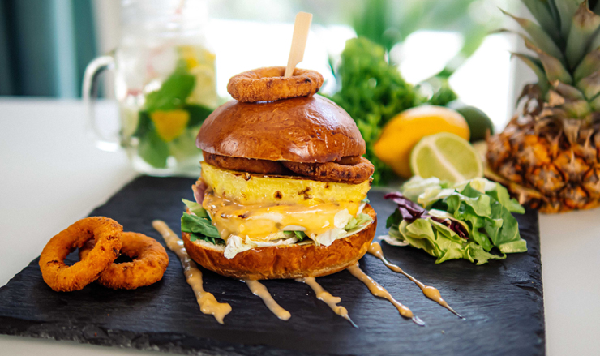

Recipe
Home
Burger

Description
This Hawaiian burger has green leaf lettuce, an all-beef hamburger, melted cheese,
grilled pineapple, and an amazing homemade teriyaki sauce. It's my version of the
fan-favorite Teriyaki cheeseburger from Red Robin! You can make them on the
stovetop, but the charred, smokey flavor of grilled burgers will always reign supreme.
Serve with homemade french fries, baked sweet potato fries, or air fryer frozen
french fries and a nice, cold drink! See what to serve with burgers for more of my
favorite sides.
Ingredients
- 1 lb ground beef
- ½ teaspoon sesame seed oil
- ½ teaspoon each, salt & pepper
- ½ teaspoon paprika
- 4 brioche buns
- 8 rings pineapple
- 4 slices provolone cheese
- 8 leaves green leaf lettuce
Steps
- Add ½ teaspoon sesame seed oil to 1 lb ground beef, then portion into 4 patties (¼ lb each) that are about ¾ of an inch in thickness and set aside.
Toast or grill brioche or hamburger buns until golden brown, if desired.
Grill the 8 rings pineapple just enough to heat the pineapple and leave the grill marks.
- Heat your grill, a large skillet, or frying pan to medium-high.
Season the 4 ground beef patties with ½ teaspoon each, salt & pepper, and ½ teaspoon paprika (optional).
Place the seasoned side facing down into the heated grill, skillet, or frying pan (they should sizzle upon contact).
Repeat seasoning on the upward-facing side of the patties. Cook the burgers for 3-4 minutes, then flip the burger when the bottom has a nicely browned coloring.
Cook the second side for 4-5 minutes, adding the 4 slices provolone cheese in the last minute of cooking.
Close the grill lid, or cover the skillet or frying pan with a lid if the cheese is not melting.
- While the burgers are cooking, place 8 leaves green leaf lettuce on the bottom half of the 4 brioche buns.
When the burger patties are finished cooking, place them onto the bun and lettuce, top with grilled pineapple, and drizzle with some of the teriyaki.
Add the bun top and serve with any additional condiments or toppings desired.